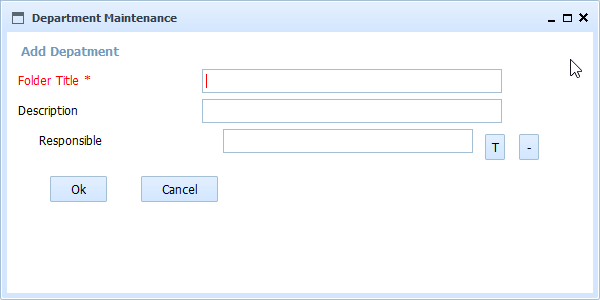

Help SMO Product Departments Add
This form allows to add a new department. All the fields follow the interface conventions of OpenProdoc:
- Standard fields: Without special mark
- Required fields: With a character "*"
- Thesaurus controlled: With a button with character "T" for selecting and "-" for deleting
- Multivalued: With a button with character "*"
- Multivalued and Thesaurus controlled: With a button with characters "T*"
With the default configuration, the fields to fill are:
- Title/Name of deparment:Name of department.
- Description:Description of department
- Responsible:Responsible of department

This operation will create a new folder of the type configured (the default configured type is Department) that could contain all the subfolders and documents specific for this issue
In SMO Tree there is a complete view of operations and forms.